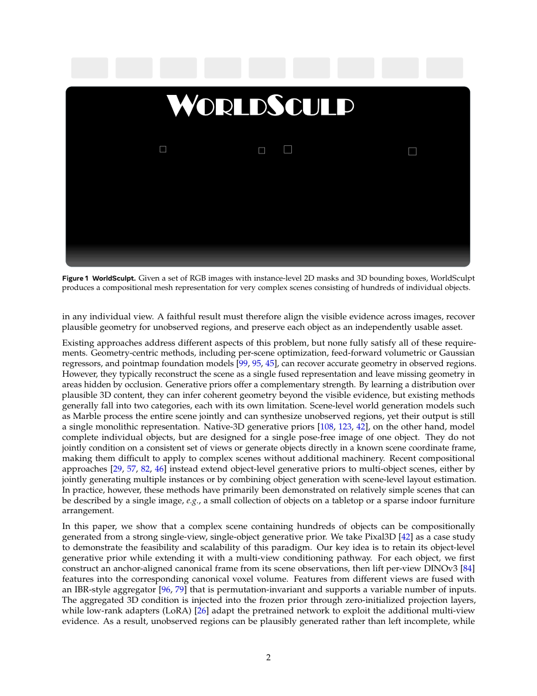

#1
★ 8/10
WorldSculpt: Generating Compositional Worlds from Grounded Videos
WorldSculpt: Generating Compositional Worlds from Grounded Videos

图 Figure · Page 2 of paper
🎯 （AI 中文深度分析暂不可用：Anthropic API 额度不足。英文栏为论文原文摘要，下方链接均可正常访问。）
We study the problem of generating a compositional 3D representation of a cluttered scene containing hundreds of objects
| 维度 | 中文 | English |
|---|---|---|
| ❓ 待解决 的问题 |
（AI 中文深度分析暂不可用：Anthropic API 额度不足。英文栏为论文原文摘要，下方链接均可正常访问。） | We study the problem of generating a compositional 3D representation of a cluttered scene containing hundreds of objects. The goal is to represent the scene as a collection of individual object meshes placed in a shared world frame, as required by downstream applications such as gaming, AR/VR, simulation, and robotics. This task is challenging in densely cluttered scenes, where objects heavily occlude one another and each view reveals only a fraction of their geometry. Geometry-based approaches typically reconstruct the scene as a single representation and leave incomplete geometry in occluded regions, while existing compositional methods with generative priors are largely limited to relatively simple scenes. We show that complex scenes with hundreds of objects can instead be generated compositionally by adapting a strong single-object 3D generative prior to multi-view observations. We instantiate this paradigm with Pixal3D, extending it with a multi-view conditioning pathway that grounds object generation in multiple posed observations. Although the model is finetuned entirely on single objects in canonical space, it generalizes to large scenes with severe occlusion without any scene-level training, demonstrating the feasibility and scalability of this paradigm. We further introduce UE-MeshyScene, a photorealistic benchmark of densely cluttered scenes with hundreds of objects, per-object annotations, and ground-truth meshes. Across single-object, controlled multi-object, and UE-MeshyScene evaluations, our method consistently outperforms prior approaches, with larger gains as scene complexity and occlusion increase. Finally, we demonstrate broader applicability by converting generated 3DGS worlds, such as Marble and HY-World 2.0, into compositional mesh scenes. |
| 💡 解决 的亮点 |
（AI 中文深度分析暂不可用：Anthropic API 额度不足。英文栏为论文原文摘要，下方链接均可正常访问。） | See the paper’s original abstract in the "Problem / 背景" row above. |
| 🧪 实验 内容 |
（AI 中文深度分析暂不可用：Anthropic API 额度不足。英文栏为论文原文摘要，下方链接均可正常访问。） | See the paper’s original abstract in the "Problem / 背景" row above. |
| 📊 实验 结果 |
（AI 中文深度分析暂不可用：Anthropic API 额度不足。英文栏为论文原文摘要，下方链接均可正常访问。） | See the paper’s original abstract in the "Problem / 背景" row above. |
| 🏁 结论 | （AI 中文深度分析暂不可用：Anthropic API 额度不足。英文栏为论文原文摘要，下方链接均可正常访问。） | See the paper’s original abstract in the "Problem / 背景" row above. |
| 🔗 论文 链接 |
arXiv: 2609.05416v1 · 📥 PDF | |
⚙️ Method · 方法详解
（AI 中文深度分析暂不可用：Anthropic API 额度不足。英文栏为论文原文摘要，下方链接均可正常访问。）
See the paper’s original abstract in the "Problem / 背景" row above.
🌟 Why It Matters · 为什么重要
（AI 中文深度分析暂不可用：Anthropic API 额度不足。英文栏为论文原文摘要，下方链接均可正常访问。）
See the paper’s original abstract in the "Problem / 背景" row above.